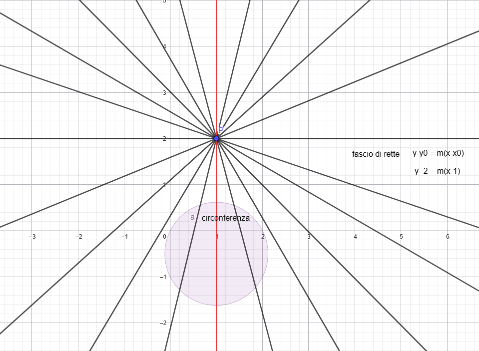
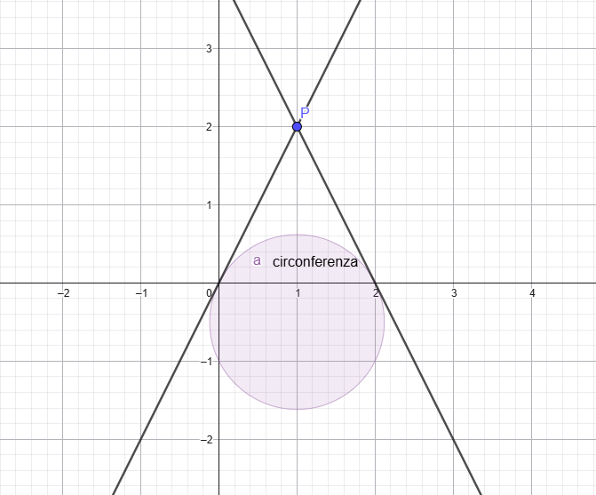

In questa relazione ci proponiamo di determinare le equazioni delle rette tangenti a una circonferenza, passanti per un punto esterno dato. Verranno presentati e confrontati tre diversi metodi:
In questa sezione si descrive il metodo per determinare l’equazione delle rette che passano per un punto dato \(P(X_p, Y_p)\) e sono tangenti a una circonferenza di centro \(C(X_c, Y_c)\) e raggio r. Il metodo si basa sulla costruzione del fascio di rette passanti per P, sul calcolo della distanza tra il centro della circonferenza e le rette del fascio, e sull’imposizione della condizione di tangenza.
Possiamo esprimere le coordinate del punto P e l'equazione generale della circonferenza come segue:
Data l'equazione generale della circonferenza \( x^2 + y^2 + ax + by + c = 0 \), dopo aver verificato che rappresenti una circonferenza, ne determiniamo centro e raggio:
Il centro \( C(X_c, Y_c) \) è dato da:
Il raggio \( r \) si ottiene come:
Per garantire che la circonferenza esista, il raggio deve essere reale (\( r^2 \geq 0 \)).
Sia \( P(X_p, Y_p) \) il punto dato. L'equazione generica di una retta passante per \( P \) è esprimibile nella forma:
Questa equazione descrive tutte le possibili rette passanti per \( P \), al variare di \( m \), a eccezione delle rette verticali (con x costante), che non sono esprimibili con tale formula. Nota che sono stati usati \( a_f \), \( b_f \) e \( c_f \) per distinguerli da \(a\), \(b\) e \(c\) dell'equazione generale della circonferenza. E' possibile esprimere l'equazione di un fascio proprio di rette come segue:
Per essere tangente alla circonferenza, una retta del fascio deve avere una distanza dal centro \( C(X_c, Y_c) \) pari al raggio \( r \). La formula per la distanza di un punto \( (X_c, Y_c) \) da una retta \( a_f x + b_f y + c_f = 0 \) è:
Sostituendo i coefficienti della retta (\( a_f = m \), \( b_f = -1 \), \( c_f = -mX_p + Y_p \)), la distanza diventa:
Perché la retta sia tangente alla circonferenza, è necessario che la la distanza, calcolata dal punto della retta più vicina al centro, quindi perpendicolare, deve essere uguale al raggio della circonferenza:
Moltiplicando entrambi i membri per \( \sqrt{m^2 + 1} \), si ottiene:
Indicando il termine all'interno del valore assoluto come \( m(X_c - X_p) - (Y_c - Y_p) \), si ha:
Questa equazione può essere risolta considerando il valore assoluto, portando a due casi:
Elevando al quadrato entrambi i membri per eliminare la radice, si ottiene un'equazione di secondo grado in \( m \), che fornisce due soluzioni \( m_1 \) e \( m_2 \), corrispondenti alle due rette tangenti.
Risolvendo l'equazione di secondo grado ottenuta nel passo precedente, si ottengono i valori di \( m_1 \) e \( m_2 \). Sostituendo questi valori nell'equazione del fascio:
si ricavano le equazioni delle due rette tangenti alla circonferenza passanti per \( P \).
In questa sezione si descrive il metodo basato su un sistema di equazioni, sulla sostituzione della funzione generatrice della retta nella circonferenza e sull’imposizione della condizione di tangenza tramite il discriminante (delta) uguale a zero. Imponendo il discriminante a zero, possiamo trovare i valori del coefficiente \(m_i\) per cui l'intersezione tra la retta e la circonferenza è unica, ovvero la retta è tangente.
Possiamo esprimere le coordinate del punto \( P \) e l'equazione generale della circonferenza come segue:
Data l'equazione generale della circonferenza \( x^2 + y^2 + ax + by + c = 0 \), verifichiamo che rappresenti una circonferenza controllando che il raggio sia reale:
Sia \( P(X_p, Y_p) \) il punto dato. L’equazione generica di una retta passante per \( P \) è esprimibile come funzione generatrice:
dove \( m \) è il coefficiente angolare, che varia e rappresenta il parametro del fascio. Questa equazione genera tutte le possibili rette passanti per \( P \) al variare di \( m \), a eccezione delle rette verticali (con x costante), che non sono esprimibili con tale formula. Il senso di usare questa forma sta nel fatto che ci permette di esplorare sistematicamente tutte le direzioni possibili da \( P \), semplificando il calcolo delle tangenti.
Per determinare le rette tangenti, sostituiamo l’equazione della retta \( y = m(x - X_p) + Y_p \) nell’equazione della circonferenza \( x^2 + y^2 + ax + by + c = 0 \):
Sostituendo e semplificando, otteniamo un’equazione di secondo grado in \( x \):
L’equazione ottenuta nel passo precedente è una quadratica in \( x \). Per una retta tangente, la quadratica deve avere una sola soluzione, cioè il discriminante (\( \Delta \)) deve essere uguale a zero:
Questa condizione fornisce un’equazione di secondo grado in \( m \), le cui soluzioni \( m_1 \) e \( m_2 \) corrispondono ai coefficienti angolari delle due rette tangenti.
Risolvendo l’equazione di secondo grado in \( m \) ottenuta nel passo precedente, si ottengono i valori di \( m_1 \) e \( m_2 \). Sostituendo questi valori nell’equazione del fascio:
si ricavano le equazioni delle due rette tangenti alla circonferenza passanti per \( P \).
In questa sezione si descrive il metodo della doppia circonferenza basato sulla costruzione di una seconda circonferenza ausiliaria, il cui centro è il punto medio tra centro \( C(X_c, Y_c) \) e \( P(X_p, Y_p) \), e il cui raggio è la metà della distanza tra \( C \) e \( P \). Di conseguenza, alla circonferenza ausiliaria appartengono sia \( C \) che \( P \). Le tangenti sono poi individuate come le rette passanti per \( P \) e per i punti di intersezione tra le due circonferenze.
Definiamo il punto \( P \) e l'equazione della circonferenza:
Per la circonferenza \( x^2 + y^2 + ax + by + c = 0 \), controlliamo che il raggio sia reale:
Calcoliamo il centro \( M(X_m, Y_m) \) della circonferenza ausiliaria come punto medio tra \( C(X_c, Y_c) \) e \( P(X_p, Y_p) \):
Il raggio \( r_m \) della circonferenza ausiliaria è la metà della distanza tra \( C \) e \( P \):
L’equazione della circonferenza ausiliaria in forma canonica è:
Svolgendo, otteniamo l’equazione generale della circonferenza ausiliaria:
Mettiamo a sistema le equazioni generali delle due circonferenze per trovare i punti di intersezione, che chiamiamo \( D(X_D, Y_D) \) e \( E(X_E, Y_E) \):
Sottraendo le equazioni e risolvendo, otteniamo i punti di intersezione:
Per ciascun punto di intersezione \( D(X_D, Y_D) \) e \( E(X_E, Y_E) \), calcoliamo il coefficiente angolare della retta passante per \( P(X_p, Y_p) \) e il rispettivo punto:
Sostituendo ciascun coefficiente angolare \( m_D \) e \( m_E \) nell’equazione del fascio passante per \( P \):
si ricavano le equazioni delle due rette tangenti alla circonferenza passanti per \( P \).
Grazie alla proprietà dell'angolo alla circonferenza sappiamo che un angolo inscritto in una semicirconferenza è retto. Poiché la circonferenza ausiliaria ha diametro \(CP\), i punti di intersezione tra questa e la circonferenza di centro \(C\) appartengono a entrambe le circonferenze e formano angoli retti rispetto al diametro \(CP\). Questo garantisce che le rette passanti per \(P\) e uno di questi punti di intersezione siano perpendicolari al raggio nel punto di tangenza, soddisfacendo la condizione di tangenza.